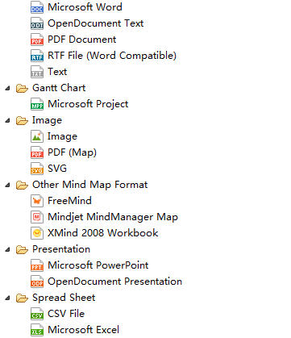
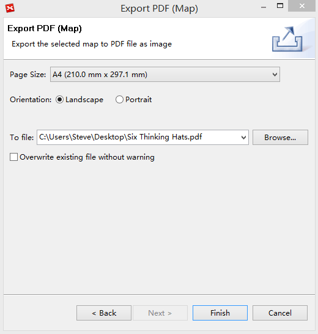
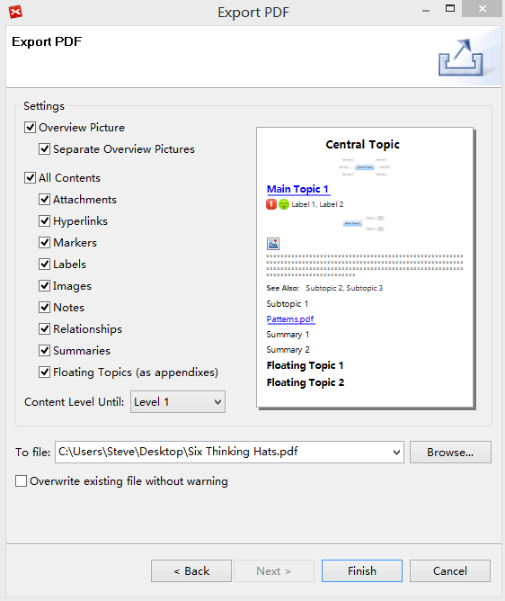
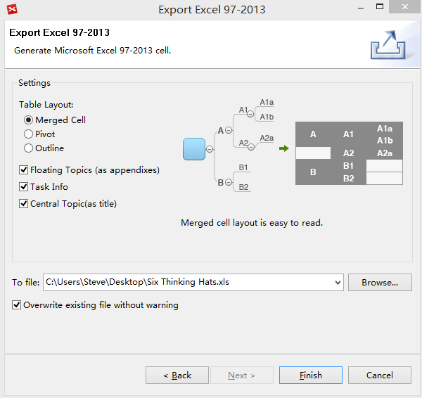
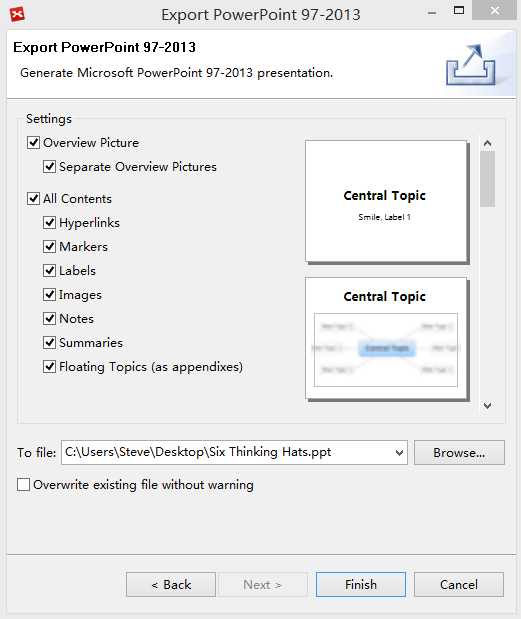

エクスポート
XMind は限界まで、私達の生産性を押し上げます。しかし、マインドマップ ファイルは普遍的な形式ではありません。共有のために他のフォーマットにマインドマップをエクスポートする必要があります。XMind は、PDF、SVG、MS Excel/Word/PPT/Project、MindManager、HTML、等へのエクスポートをサポートしています。

エクスポート PDF マップ:- メニューの[ファイル]→[エクスポート]を選択します。
- エクスポートダイアログ ボックスで、"PDFマップ"を選択し、[次へ＞]をクリックして続けます。
- [参照...]をクリック後、場所とファイル名を選択します。
- 設定を変更: ページサイズ、方向。
- [完了] をクリックして終了します。

Mindjet MindManager マップにエクスポートする:- メニューの[ファイル]→[エクスポート]を選択します。
- エクスポートダイアログ ボックスで、"Mindjet MindManager マップ"を選択し、[次へ＞]をクリックして続けます。
- [参照...]をクリック後、場所とファイル名を選択します。
- [完了] をクリックして終了します。
- メニューの[ファイル]→[エクスポート]を選択します。
- エクスポートダイアログ ボックスで、"SVG"を選択し、[次へ＞]をクリックして続けます。
- [参照...]をクリック後、場所とファイル名を選択します。
- [完了] をクリックして終了します。
PDF、RTF、マイクロソフトWordへのエクスポート:
- メニューの[ファイル]→[エクスポート]を選択します。
- エクスポートダイアログ ボックスで、"PDF 文書"を選択し、[次へ＞]をクリックして続けます。
- [参照...]をクリック後、場所とファイル名を選択します。
- 次の設定を変更して、プレビューダイアログ ボックスで変更を確認してください: '概要ピクチャ'、' 部分的な概要ピクチャ '、'注'、' フローティングトピック(付録として) '、'ラベル'、'マーカー'、'画像'、'関連'、'ハイパーリンク'。
- [完了] をクリックして終了します。

CSV/Microsoft Excel へエクスポートする:- メニューの[ファイル]→[エクスポート]を選択します。
- エクスポートダイアログ ボックスで、"Microsoft Excel"を選択し、[次へ＞]をクリックして続けます。
- テーブルのレイアウトと内容を選択します。
- [参照...]をクリック後、場所とファイル名を選択します。
- [完了] をクリックして終了します。

Microsoft PowerPoint へのエクスポート:- メニューの[ファイル]→[エクスポート]を選択します。
- エクスポートダイアログ ボックスで、"Microsoft PowerPoint"を選択し、[次へ＞]をクリックして続けます。
- [参照...]をクリック後、場所とファイル名とファイルフォーマットを選択します。
- プレビューダイアログ ボックスで変更を参照して、設定を変更する:”概要ピクチャ”、”部分的な概要ピクチャ”、”注”、"フローティング トピック(付録として)"、"ラベル"、"マーカー"、"画像"、"関連"、"ハイパーリンク"。
- ”フッターテキスト”を入力します。
- [完了] をクリックして終了します。

Microsoft Project へのエクスポート- メニューの[ファイル]→[エクスポート]を選択します。
- エクスポートダイアログ ボックスで、"Microsoft Project"を選択し、[次へ＞]をクリックして続けます。
- エクスポートされる内容を確認し、優先順位マッピングを設定します。
- [参照...]をクリック後、場所とファイル名を選択します。
- [完了] をクリックして終了します。
注:
- プレビューは参考例です。あなたのマップの外観は、次にように実際には変わるかもしれない。
- Microsoft Word、PowerPoint、Excel、Project へのエクスポートは Windows で使用可能です、Mac と Linux は Office がインストールされていません。